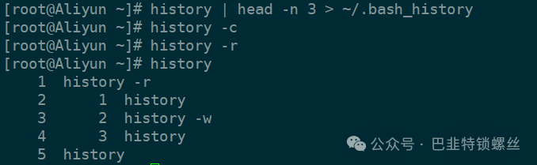
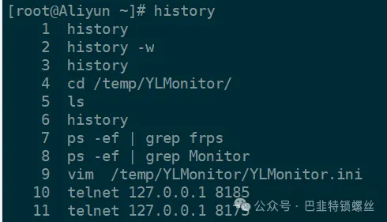

Linux 清除 history 记录的方式
1. 清除当前用户会话的历史记录
如果你只想清除当前终端会话中产生的历史命令，可以使用下面两条命令组合：
history -c
export HISTSIZE=0
history -c 会清空当前 shell 的历史缓存；export HISTSIZE=0
则阻止新的历史写入（临时）。
2. 删除指定行数的历史命令记录
history -d <行号> 可以删除某一行。如果你想"只保留最上面 N 条"，可以用重定向覆盖：
history -d <行号>
# 例如：只保存最上面 3 条历史记录，其余全部删除
history | head -n 3 > ~/.bash_history # 保存最上面 3 条记录
history -c # 清除记录
history -r # 重新加载 history 记录
3. Bash 历史记录文件和 Bash 会话历史
Bash 会同时在两个地方保存历史：内存中的会话历史（history 命令看到的）和磁盘上的
~/.bash_history 文件。两者需要同时处理：
rm ~/.bash_history # 删除 bash 历史记录文件
history -c # 删除当前会话中历史记录
# 查看完整 bash_history 内容示例：
[root@Aliyun ~]# cat ~/.bash_history
history history
cd /temp/YLMonitor/ls
ps -ef | grep frps
ps -ef | grep Monitor
vim /temp/YLMonitor/YLMonitor.ini
telnet 127.0.0.1 8185
telnet 127.0.0.1 8175
docker ps
docker ps -a
free -m
ls
4. 手动删除历史记录文件
如果想彻底清除所有历史，直接删文件：
rm /home/用户名/.bash_history # 删除其他用户的历史记录
rm ~/.bash_history # 删除当前用户的历史记录
history -c # 同时清空内存
history -r # 可选：立即生效（重新加载后会变成空）
如果你用的不是 bash（而是 zsh / fish 等），对应的历史文件分别是
~/.zsh_history、~/.local/share/fish/fish_history。
评论